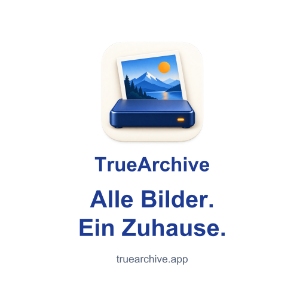
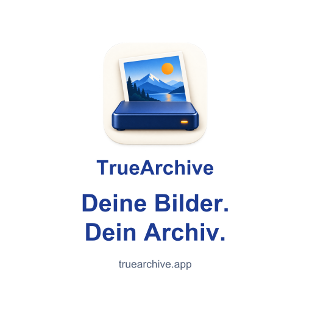
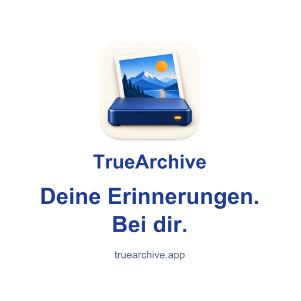
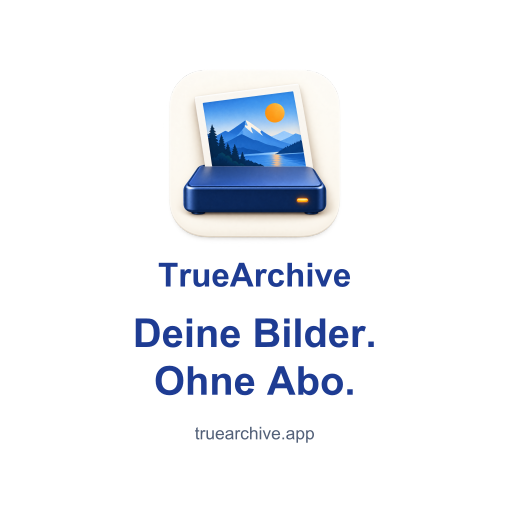
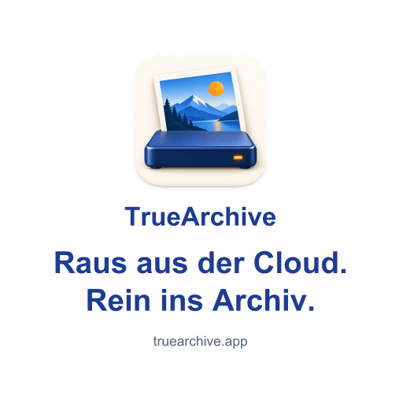
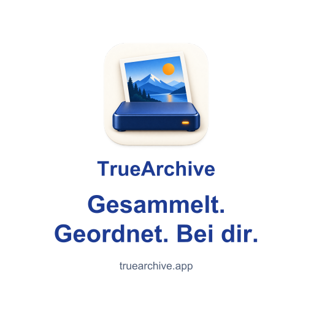

Für deinen Chat.
Für deinen Laptop.
Nimm TrueArchive mit. Such dir einen Sticker aus, speichere ihn auf dem Handy oder lass ihn als echten Aufkleber drucken.
Welcher passt zu dir?
Ein Logo, sechs Sprüche und eine Variante in Blau.
Tippe auf „Bild öffnen“ und speichere es in Fotos oder deiner Galerie. Der Download speichert das Bild; mit der Anleitung unten wird daraus ein Sticker.
{kind=link}
{kind=link}

Alle Bilder. Ein Zuhause. · Weiß
{kind=link}
{kind=link}
Alle Bilder. Ein Zuhause. · Blau
{kind=link}
{kind=link}

Deine Bilder. Dein Archiv.
{kind=link}
{kind=link}

Deine Erinnerungen. Bei dir.
{kind=link}
{kind=link}

Deine Bilder. Ohne Abo.
{kind=link}
{kind=link}

Raus aus der Cloud. Rein ins Archiv.
{kind=link}
{kind=link}

Gesammelt. Geordnet. Bei dir.
{kind=link}
{kind=link}
Speichern. Zum Sticker machen.
WhatsApp · iPhone & Android
- Öffne oben ein Motiv. Auf dem iPhone das Bild länger berühren und in Fotos sichern; auf Android in die Galerie herunterladen. Landet es in „Dateien“, öffne es dort und sichere das Bild in Fotos.
- Öffne in WhatsApp deinen Chat mit dir selbst und den Stickerbereich. Auf Android: Erstellen. Auf dem iPhone: Bild-mit-Plus-Symbol → Foto verwenden. Wähle das gespeicherte Motiv.
- Wähle in der Vorschau das vollständige Motiv mit Spruch. Sende es in deinen eigenen Chat.
- Als Set speichern: Auf Android den Sticker antippen → Zu Sticker-Set hinzufügen → Neu. Auf dem iPhone im Stickerbereich Bearbeiten wählen, Sticker markieren → … → Zum Sticker-Set hinzufügen → Neu. Nenne das Set „TrueArchive“ und speichere es.
Fehlt die Funktion, aktualisiere WhatsApp. Offizielle Anleitung für iPhone und Android.
iPhone · Apples Stickersammlung
Für das reine Logo: In Fotos speichern, öffnen und das Logo länger berühren. Wähle Sticker hinzufügen, wenn iOS das Motiv erkennt. Danach findest du es in deiner Stickersammlung für unterstützte Apps.
Beim automatischen Freistellen kann ein Spruch verloren gehen. Für die vollständigen Motive nutze die WhatsApp-Anleitung oder versende das Bild als Bild. Anleitung von Apple.
Andere Apps auf Android
Die Stickersammlung hängt von App und Tastatur ab. Nutze PNG oder WebP in einem Sticker-Editor, der deine Nachrichten-App unterstützt. Das ZIP enthält Bilddateien und installiert sich nicht selbst als Android-Stickerpaket.
Ein Platz auf deinem Laptop.
Für haltbare Aufkleber empfehlen wir weiße Vinyl- oder PP-Folie mit mattem Schutzlaminat. Abgerundete Ecken bleiben weniger leicht hängen; ablösbarer Kleber erleichtert den späteren Austausch.
60 × 60 mm EndformatDie Druck-PDFs enthalten rundum 3 mm Beschnitt: Das gesamte Blatt ist 66 × 66 mm groß.
In den PDFs stecken das hochauflösende Logo und Vektorschrift. Die Farben sind in RGB angelegt. Lass Beschnitt und Farben an die Vorgaben deiner Druckerei anpassen und prüfe die Druckvorschau vor der Bestellung. Bestelle 60 mm Endformat, nicht die 66 mm des PDF-Blatts.
- Sticker Mule Muster — kleine Testauflage mit eigenem Motiv; der übliche Kleber haftet dauerhaft.
- StickerApp — für ablösbare Laptop-Sticker weißes Low-Tack-PP und mattes Laminat auswählen.
Du bestellst direkt bei der Druckerei deiner Wahl. Das sind externe Anbieter, kein TrueArchive-Shop.
Gern weitergeben.
Du darfst die Motive privat teilen und für dich als Aufkleber drucken lassen. Fragen oder Feedback? lutz@truearchive.app.